Kuala Lumpur | Penang | Malacca | Kota Bharu | Cameron Highlands | Perhentian Islands
Visiting Penang/Pulau Pinang (1)
About the "Yearly George Town Festival".
| Penang Hin Bus Depot |
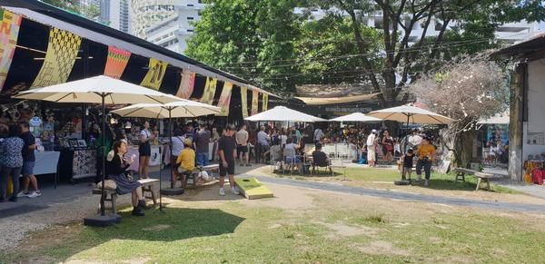 | | 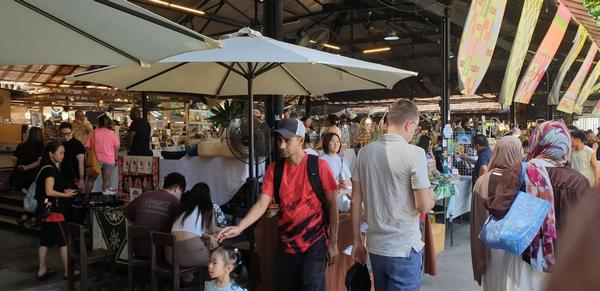
|
Hin Bus Depot. The weekend market is held every Saturday and Sunday from 10:00am to 5:00pm. Full details here.
|
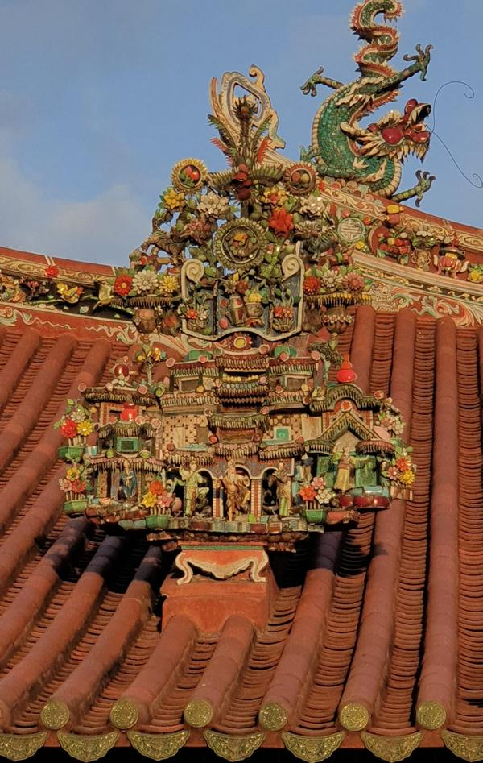 Roof of Kuan Yin (Goddess of Mercy) Temple in Street of Harmony (ex Pitt Street).
|
 Andaman island (right), is still under construction. Full details here. Andaman island (right), is still under construction. Full details here.
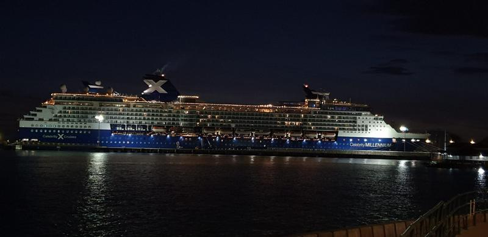 Swettenham Pier, located at Weld Quay, is a major entry point for cruise ships coming into Penang.
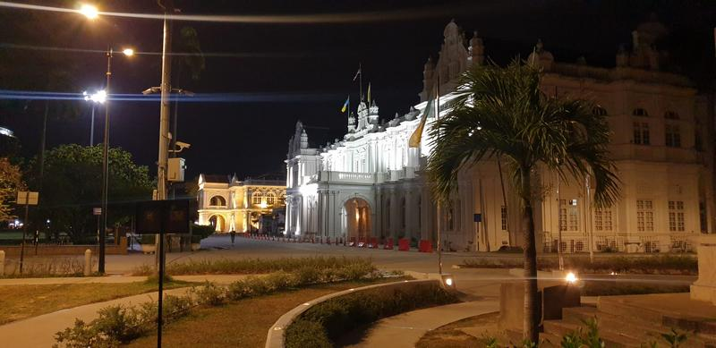 Old Penang Town Hall, lighted up at night. |
Grateful thanks to tsk for all the above photos which were taken in January 2026. |
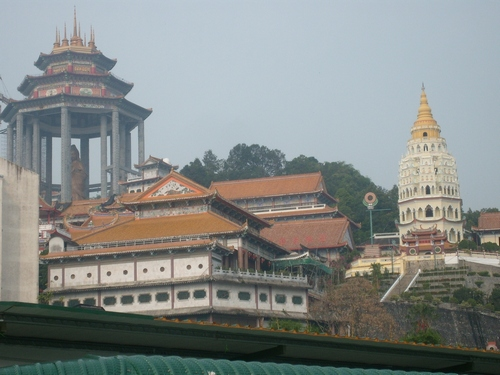 | | The Kuan Yin statue and the Kek Lok Si pagoda dominate the skyline as you approach the Air Hitam market in Penang. (Picture taken on a cloudy morning.) |
PENANG is undoubtedly one of the highlights of your visit to Malaysia. Known all over Malaysia and Singapore for the high quality and variety of its food, it has also many places of interest to offer.
Added to this the long stretches of fine, sandy beach along Batu Ferringhi and the cool, invigorating air up Penang Hill plus the low cost of living and you have everything that a traveller can look for in a holiday destination.
As if all this is not enough it has, since 7 July 2008, been listed as a UNESCO World Heritage site (together with Melaka).
There are two ways you can enter Penang island if you should come by bus from the mainland - you either get off at Butterworth and walk some distance to take the ferry to cross over to George Town or the bus will take you across the Penang Bridge. In the latter case some buses will just end up at Sungai Nibong which is the terminal for express buses and quite some distance from George Town. Make sure you take the ones that continue to Komtar in George Town or you will have to take a taxi to continue the journey! By the way Komtar is also where you go to for buses that go to Batu Ferringhi and Air Hitam as well.
You can spend one whole day at Air Hitam. Start with an early morning breakfast at one of the shaggy-looking foodstalls at the Air Hitam market which nevertheless offer yummy hawker dishes such as the koay teow soup or the curry mee that Penangites adore. The fact that you are seated at one table does not mean that you cannot order food from the other stalls. But be prepared to pay each time the food (or drink) is brought to you and not at the end of your meal.
|
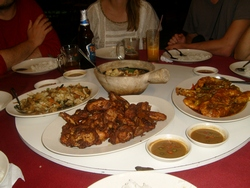 Penang is world-famous for its food. Its "Inchi Kabin" is simply out of this world!
|
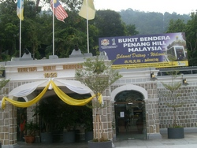 The entrance to the Penang Hill Railway. It has acquired a new train in Year 2011.
|
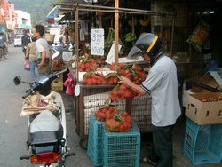 A rambutan-seller at the Air Hitam market. This morning market has much local life.
|
After breakfast take a walk up the market which is just along the main road. At least you will never get lost here! After this interesting market visit you can head for the Kek Lok Si pagoda which is a short walk away but will need some climbing to go to the top. The Kuan Yin statue (Kuan Yin being the name of the Goddess of Mercy) is situated next to the pagoda. Completed in 2002, it stands prominently at 30.4m. You can either go there by car or take the "inclined lift" (a sort of cable car) as the way up is quite stiff.
When you have spent the whole morning visiting the pagoda, you might want to have your lunch in one of the restaurants nearby before proceeding to the Penang Hill Railway to take the funicular train up the hill. You will be surprised at the great speed in which the Swiss-made train is capable of going on the way up. In fact ever since its inception in 1923, the train to Penang Hill has been changed only twice - in 1977 and in 2011.
|
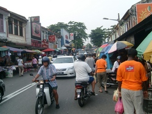 "Anything goes" at the busy Air Hitam market as car drivers, motorcyclists and pedestrians fight for right of way.
|
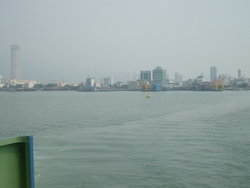 The ferry coming from Butterworth approaches George Town on a misty day. The Komtar building is on the left.
|
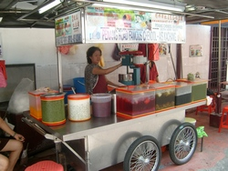 This humble cendol stall near the overhead bridge in Penang Road always has an unending line of customers.
Next Page
|
|
|
{kind=link}
{kind=link}
{kind=link}
{kind=link}
{kind=link}
{kind=link}
{kind=link}